Mathematical extraction of properties¶
In this chapter the mathematical formulas used by GATHODE are explained.
Background correction¶
To correct for the optical density of the growth medium, throughout the experiment some wells are filled with the pure growth medium (i.e. not inoculated with cells). The arithmetic mean of the raw readout of the optical density for each point in time, denoted by 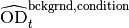, is used as a background reference:
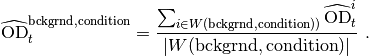
For each well i, the background-corrected optical density is given by
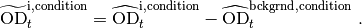
High density correction¶
The high density correction is needed to correct for nonlinearities of the background-corrected optical density (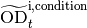) versus the real optical density (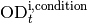). This nonlinearity is approximated by a cubic formula, for which the three parameters a1, a2 and a3 define the coefficients:
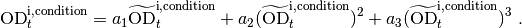
Maximal growth rate and lag time¶
To extract the maximal growth rate, a fit of an exponential function to the data is required. Since the data does not exhibit an exponential form on a large scale, the fit is performed piecewise for small intervals of w data points (see Fit window):
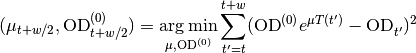
In principle the maximal growth rate can then be determined as the maximal 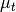 and the corresponding lag time 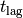 can be calculated as the intersection of the exponential function with the value of the Lag at parameter. Note that only those values are considered for which the 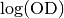 is greater than the log(OD) cutoff.
To mitigate the effect of noisy data, the program requires some criteria to be fulfilled:
- 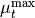 must be positive
- 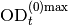 must be positive
- the optical density at the time of the maximal growth rate must not be below a given threshold (at low values of optical density the relative level of noise increases, which amplifies for the growth rate)
Further, GATHODE allows to manually adjust the interval within which the time of the maximal growth rate should fall (see Maximal growth cutoff). If such an interval is specified, the location of must not be at the endpoints of the interval, as this would mean a local maximum could not be found.
This strict requirement of a local maximum can be loosened by setting
the parameter allow at cutoff, which
mathematically means that the derivative to of  may be
non-zero.
may be
non-zero.
Growth yield¶
The growth yield is determined by performing a linear regression within a small fit window around each data point and finding the maximal with a slope that is compatible with zero.
To mitigate the effect of noisy data, the linear regression is performed on smoothed and the following criteria need to be fulfilled:
- the optical density of the yield must be larger than the optical density at the maximal linear growth
- the time of the yield is greater than the time of the maximal slope (note that the maximal slope is not the same as the maximal growth rate)
- the yield is not negative
The strict requirement of the slope being compatible with zero can be loosened by setting the parameter allow n standard errors.